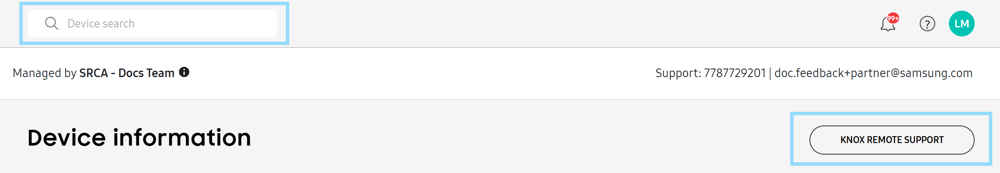

Run a remote support session
Last updated June 17th, 2026
Once you set up the Knox Remote Support agent on a device, you can begin a remote support session from the Knox Remote Support console. During a remote support session, you can connect directly to a user’s device from your computer and run diagnostics or fix issues.
Launch Knox Remote Support
You can launch Knox Remote Support through the Knox Admin Portal or through Knox Manage.
To open the Knox Remote Support console from the Knox Admin Portal, you have two options:
- In the left navigation menu, click Knox Remote Support.
- Enter a device IMEI or serial number in the search bar at the top of the Knox Admin Portal. On the Device information page that opens, click KNOX REMOTE SUPPORT.

You can open Knox Remote Support from both the Knox Manage new and original consoles, but the process differs slightly between the consoles.
In the original console:
-
Go to the Device page.
-
Select a device, then click Knox Remote Support.
Alternatively, click a device’s name. On the Device Details page that opens, click Knox Remote Support at the bottom of the page.
-
A dialog shows the available start type options depending on the device’s status and manufacturer. Select an option, then click OK. See the below sections for more information on each start type.
In the new console:
-
Navigate to the Devices page and select a device.
-
Click ACTIONS > then click Launch Knox Remote Support.
3. A dialog shows the available start type options depending on the device’s status and manufacturer. Select an option, then click OK. See the below sections for more information on each start type.
Start a session
There are three methods to start a session:
- Automatically start — Begins a remote session without user intervention. This method only applies to Samsung devices that are fully managed.
- Ask to start — Notifies the device user that you want to start a remote support session, letting them accept or deny the request. This method only applies to Samsung devices that are fully managed.
- Start with code — Generates a code you can send to users through SMS or email, which they enter on the agent to start a session. This method applies to any devices that are associated with your Knox Suite plan.
To start a remote session on devices managed by a EMM:
-
Go to the Devices page in the Knox Remote Support console. Any devices that you installed Knox Remote Support to with a managed configuration appear in the device list.
-
Select a device, then click Ask to start, Automatically start, or Start with code.
- If you select Ask to start, the user receives a notification that you want to start a remote session. Tapping on the notification opens the Knox Remote Support agent and automatically enters the access code generated from the console. The user must tap Start, then Accept on the pop-up that opens.
- If you select Start with code, then follow the steps in the section below.
The Remote viewer opens and the remote support session starts.
To start a remote session on a device not managed by a EMM:
-
Open the Knox Remote Support console. The Remote viewer page opens by default.
-
Click Start with code. An access code is generated on the remote viewer screen. To send through SMS or email, click Send code.
-
On the Send code pop-up that opens, the Mobile number and Email fields are each selected by default, but you can unselect either option based on your preferences. Both options send the access code and a link to install the agent, but the email option also sends a QR code that users can scan instead of entering the access code. Enter the device user’s information, then click Send.
-
Instruct the device user to enter or scan the access code on the Knox Remote Support agent, and tap Start.
-
A pop-up appears on the agent with your details and the option to Accept or Deny the request. Once the user accepts the request, the remote session begins.
The Remote viewer opens and the remote support session starts.
Remote device control
To control a device remotely using the Knox Remote Support viewer:
- Once connected successfully, you can view the connected device’s information and adjust the transfer quality.
| Tab | Description |
|---|---|
| Knox Remote Support | See a history of device activities for the device that's currently connected, such as connection times, recordings, screen captures, and file transfer processes. |
| Information | See detailed device information, such as the device model name, IMEI, serial number, OS version, Knox SDK installation status, and the Knox Remote Support agent running area. |
| Settings |
|
-
Perform IT service or support activities to the device using this viewer.
By default, there’s a 30-minute time limit for each Knox Remote Support session. You can reset the time limit by clicking the clock icon. Five minutes before you reach the time limit, a pop up opens to ask whether you want to extend the session. If you choose to extend it, your session’s timer is restarted. Otherwise, your session ends after five minutes.
-
To end the session and cease remote support, instruct the device user to tap Stop on the screen, or click Disconnect in the Knox Remote Support viewer on your computer.
Operate the viewer
When the Knox Remote Support viewer successfully connects to the Knox Remote Support agent, a live view of the device’s screen gets shown on the Remote viewer. The Remote viewer provides the following functions:
If the device screen is locked, then the viewer shows the following error message: The screen is turned off. Press the Power button to start. In this case, functions are limited to Record, File browser, Home, and the Power button.
Control device buttons
The Menu, Home, Back, Power, Volume Down / Up and Rotate buttons at the bottom behave like the softkeys and hardkeys on the device. Click the buttons to trigger the associated action on the device. For example, clicking the Back button in the viewer returns the device to the previous screen. If the device screen is locked, you can click the Home button to unlock the screen.
Record the device screen
For Samsung devices only, you can record the device’s screen to find out if errors are occurring on the device. Recorded videos are saved in WEBM format, with a file name that contains an admin ID, tenant ID, device name, and the date and time of the recording. For example, admin@stage.com_Abc S21 (SM-G991N)_20220523155102.webm.
You can record up to ten minutes of video. Network QoS isn’t available while recording is in progress. If the maximum recording time is exceeded, a notification shows and the recording stops.
To record the device screen:
- At the bottom of the screen, click Record.
- Click Rec to start recording a video. The recording time shows on the Record card on the left side of the screen, and the user is notified that the screen is being recorded on their device.
- Click Pause to pause the recording or click End to finish the recording. If you click Pause the Restart and End controls become available. Click Restart to discard the recording and start over.
Capture the device screen
Click Capture Screen to take a snapshot of the device screen. Captured files are saved in JPG format, with a file name that contains information and identifiers about the admin, tenant, device name, and the date and time of the capture. For example, admin@stage.com_Tomek_Android_1_20220523154804.jpg.
- When providing remote support from the Knox Admin Portal, the file name includes information about the Samsung account.
- When providing remote support from the Knox Manage console, the file name includes the admin ID and tenant ID.
Knox Remote Support can’t capture the screen of apps that make use of the FLAG_SECURE flag in the Android Window Manager.
Transfer files
You can transfer files, such as log files, from a device to your computer, and vice versa, to help troubleshoot devices. This feature is intended for device troubleshooting, not as a method to support other work. Files transferred to a device are saved to the Downloads directory in its internal storage, while files transferred to your computer are saved according to the settings of your web browser’s download manager. You can transfer up to 200 MB of files at a time.
To transfer files from the device to your computer:
- In the toolbar of the Knox Remote Support viewer, click File Browser.
- On the device, instruct the device user to accept the request to run the file browser.
- Click a file to transfer it immediately. If you want to transfer multiple files at once, click and hold each file to select them for transfer, then click Select.
To transfer files from your computer to the device, drag the files from your desktop or file explorer onto the live view.
To view a log of transferred files for the remote session, in the Transfer File card, click Detail. A list of file names and sizes opens.
Rotate the device screen
To change the orientation of the device’s screen to landscape or portrait mode, click Rotate at the bottom of the screen. The device’s screen won’t rotate if the Home screen or the focused app doesn’t support screen rotation.
View remote session history
To view a log of all support sessions, click History in the left navigation pane. A session’s device information is tracked, including the model name, device ID, and phone number.
In the Details column for a session, click View to see detailed session data, like the duration, the version of the device’s OS, and the version of the Knox Remote Support agent installed on the device. You can search for a particular device by date, or by entering the device’s full IMEI or serial number.
Click Download History as CSV to save the log data for your query as a spreadsheet file.
If your default country code is set to South Korea, the Download history as CSV pop-up appears. Due to the Privacy Policy implemented in version 25.07, you must provide a reason for why you want to download this data. In the text box beside Reason for download, enter your reason, then click OK.
You can also adjust the time zone of Knox Remote Support to vary from your computer’s local time zone. To adjust the time zone, click your account name, select Time Zone, then select a region.
On this page
Is this page helpful?